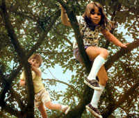
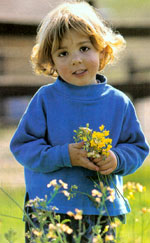
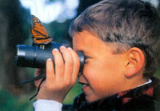
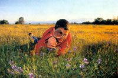

My mother always knew where to look for me on windy days or just before a sudden storm, when restless gusts stirred the leafy treetops to a green froth and sent birds in the darkening sky winging for shelter. She'd step out on the porch and call to me in my high, hidden perch amid the wildly swaying topmost branches of the maple near our garage. "Better come down now," she'd holler, "before one of those branches breaks." Then she'd go back indoors, both of us knowing full well that nothing less than lightning, hard rain or dinner time would prompt my descent.
I loved to ride the wind up there, my feet braced against creaking limbs, my back to the tree's trunk lurching and rolling like a ship's mast above tossing seas, the leaves all around flapping and fidgeting, hanging on by their stems for dear life. I loved the power and danger and beauty of it: the heady height, the dizzying motion, the push-pull force of wind, the sure answering strength of limber living tree, the smell of green leaf flesh and newborn air.
I'm speaking not just of childhood memories, but of moments in the making of the love for nature that runs bone-deep in me. There are many more memories I could relate: of fishing in the wide, slickshale creek behind our house; of countless days spent wandering the rolling fields of my grandparents' farm; of pheasants bursting by the dozen from hedgerows; of playing hide-and-seek in towering forests of sweet corn; of crunch-crunch-crunching across acres of iceglazed, sunlight-bejeweled snow.
This was my childhood and-I'm certain-the reason why I feel such a sustaining connection to the outdoor world. It's also, I suppose, why I feel so compelled to instill the same bond with nature in my own children.
That's easier said than done. Times, after all, have changed. Far fewer children are growing up rural, like I did. It's often not the outdoors but the indoors that defines their environment. And speaking of the environment: Isn't that something you learn about in school, along with math and social studies?
Fortunately for parents, one truth remains: All children are born naturalists. Wonder and curiosity come installed. Just look in the eyes of any youngster watching a butterfly or holding a lightning bug. See? The challenge isn't so much to teach children about the natural world, but to find ways-despite school activities, video games and the other distractions of youth-to nurture and sustain the instinctive connections they already carry. Here are some ideas that have helped me in that pursuit. Perhaps you'll find them useful for your own born naturalists.
ADVENTURES IN THE NIGHT
Children don't necessarily take to trudging for miles with "nothing to do" (grown-ups call it hiking). But add the element of darkness and you have a different experience-an adventure. The night is full of mystery, of spooky rustlings in shadowy bushes and odd twitterings in the treetops. Mix in starlight and permission to stay up past bedtime, and what child could resist?
Most back yards are perfect for exploring the night-unless you're surrounded by glaring streetlights. Of course, if you happen to live near, or are camping in, a state or national forest, so much the better.
Each of you should carry a flashlight, but first cover each lens with red paper. The colored light will illuminate your path but won't startle nocturnal animals, most of which cannot see color. Remember, though, that it's the dark you're out to discover. Keep your flashlights off whenever possible.
Quiet also is important. Most people, even children, respond instinctively to the night's hushed stillness by moving quietly and speaking in whispers. There's something about the darkness that pricks up our senses, too-some remnant of our primeval past as prey and predator, perhaps.
Certainly, there's plenty in the night to see, hear, smell and touch. If you have a garden, watch for night crawlers stretched from their holes like long, gluey fingers, each straining for a leaf to drag into an earthy pantry. Ground beetles and webless hunting spiders stalk among the tall plant stems of meadows and lawns. Voles and white-footed mice skitter through the leaf litter. Hungry bats scour the skies for buggy meals.
One of my favorite night-stalking activities, especially with youngsters, is moth baiting. Many moths and other insects feed on fermenting tree sap or fruit. You and your cohorts can attract such creatures by mixing a bait, or moth "sugar," approximating those natural food sources. Try this trusty formula: 1 overripe banana (mashed), 2 ounces of apple cider vinegar and a half pound of brown sugar. Paint a half-page-size patch of this goo on trees, rocks or fence posts before sundown, then return at night to check out the patrons.
Also, of course, take time to look up . The big dipper, Polaris, the Moon, shooting stars -there's a whole universe out there. Go ahead lie down on your backs and take it in.
A LINE AND A POLE
Fish, frogs, gooey algae, splashing water, worms and bugs, something huge tugging on your line-fishing is just plain made for kids. That most grown-ups like it too-well, that's just the child in all of us coming out to play. Nevermind that fishing teaches lessons in conservation, aquatic life and food chains-fishing is, first and foremost, flat-out fun.
Just grab a line and a pole (for about $15 you can pick up a simple spin-cast reel and rod outfit, plus some hooks, sinkers and worms) and head together for the nearest fishing hole. Catching something is the only real requirement. Farm ponds often are best, and most owners will give permission if you're looking to fish with a youngster. A stocked commercial fishing lake is a good first-trip choice, too.
What's that-you haven't done much fishing yourself? You're not sure you know enough to take your son or daughter? That's great: You get the added pleasure of discovering fishing together. Just grab two lines and poles-and maybe peruse a book on the basics beforehand.
GET THE REAL STUFF
You should've seen my youngest son's wide eyes when he opened the Young Astronomer's SuperPower Telescope ($250) for his birthday. More importantly, you should've seen his look of utter disappointment that night, when we set the thing up and aimed it at the sky. At every touch the plastic scope shook on its flimsy tripod like a three-legged giraffe. Stars skittered about in the lens, no more distinct than tiny fuzzy bouncing dots. Focusing was impossible. Not even the moon came in clear.
I returned the "kid stuff" and for less money bought real stuff: An honest tripod, a binoculars mount and a good pair of 8x42 binoculars (8 refers to the magnification factor and 42 is the millimeter diameter of the lens). Mounted on the tripod, the binoculars pull in night-sky objects sharp and bright. Stars and constellations multiply as if by magic; the moon's landscape jumps out like a relief map. Plus, the binoculars alone are great for daytime bird- and animal-watching (and general child-style spying).
Toy microscopes usually disappoint, too-and are not nearly as much fun for a child as the real-stuff substitute: a quality hand lens. The microscope stays home and provides dim views of prepared slides. A hand lens folds into its own protective case, pops in a pocket and performs amazing transformations of bugs, rocks and almost any other everyday object. Dandelion flowers sprout throngs of yellow Dr. Seuss-like characters; moss magically blooms into a wizard's wilderness; tiny violets burst into ornate bearded orchids; earthworms bristle with hairs. A good 10x hand lens (higher magnification makes viewing difficult; lower is less revealing) costs between $15 and $40-truly a bargain.
The real-stuff-not-kid-stuff principle applies to many other nature- and outdoor-related items, too: tents, sleeping bags, backpacks, butterfly nets you name it. Get the real thing.
TIME ALONE
It happened one day when I walked outdoors and heard a distant "Hey Dad, look at me!" in the wind. I peered upward to see two small legs dangling from a thin branch high in a wildly swaying tree. My parental heart leapt to my throat and before I could stop myself the words "Get down from there right now!" came flying out of my mouth.
Even as a teenager, I knew I was fortunate to have grown up in a place where I could spend a lot of time outdoors. But it wasn't until that moment, as a father, that I came to fully appreciate the role my parents had played by giving me the freedom to discover nature on my own terms (within reasonable limits, of course).
Today's children are better educated in ecology and environmental science than any previous generation. It's important knowledge. But nature is more than academic fodder. The sun's role in the carbon cycle is one thing; its warmth on the back of your neck, another. One can be taught; the other must be felt .
Occasionally, I'll notice one of my sons off by himself, sitting by our pond, watching dragonflies, or wandering in our small woodlot. I'm tempted to go tell him something about dragonflies, or to point out the goldenseal in the woods. But I resist.
I know there'll be many chances for him to learn facts about the natural world. What children need most, I think, is just the time and opportunity to be in the outdoors-to feel the pulse of nature, to exercise their connection to it on their own, no help required. Given that sort of learning, they'll do fine. They are, after all, born naturalists. Just like me. Just like you.
Want to share your experiences with children and nature? Go to http://www.motherearthnews.com/forums and register for our Reader Forums, where you can post nature-exploring ideas and swap stories with other readers.
Mother Earth News
|
 Never settle for toy versions of outdoor equipment, such as hard lenses, binoculars or camping and hiking gear. Real stuff lasts longer, performs better and generally costs the same. |
 |
 |
|
 |
|
|